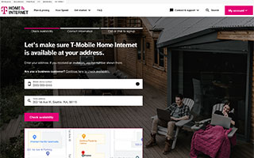
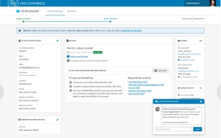
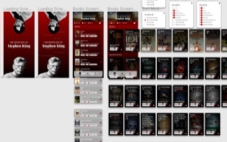
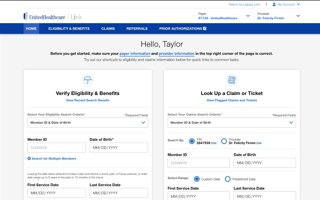
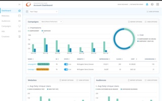
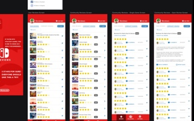
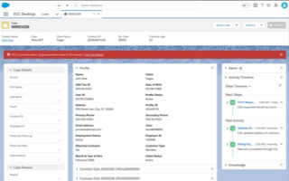
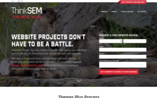

T-Mobile
Understanding our customer's needs and why they make decisions allowed the T-Mobile Home Internet team to create a thoughtful, consistent experience.
View project detailsT-Mobile
UX Research & Visual Design
Tools/Methodologies Used: User Research (Qualified & Quantified), Miro, Sketch, InVision, Zeplin, Asana
By taking advantage of user research and aligning with T-Mobile's design system, our team was able to create a thoughtful customer experience.
The T-Mobile ISP Home Internet Eligibility team is responsible for creating and iterating the customer experience for the home internet sign up flow.
While also helping other T-Mobile teams with UX-related challenges, my main role was Senior UX Designer for the Home Internet Eligibility team. I needed to quickly understand how we might improve the overall customer experience, while also bringing the visuals in line with T-Mobile's latest brand standards and design system.
One of the challenges was working in concert with multiple teams, each responsible for different areas of the whole Home Internet experience. These teams were made up of myriad developers, designers, project managers, writers, and more. Keeping everyone aware and on board with my team's direction and decision making was as challenging, if not more so, as creating and building the new experience itself.
With regard to the experience, our core issue was that a large visual disconnect existed from the landing page that led to our eligibility experience. I worked with the digital team that created said landing page, and quickly gathered the resources necessary to update our own designs.
This meant getting up to speed with and understanding how to incorporate T-Mobile's design system. It also meant reading through user research to understand how and why customers made decisions throughout the experience.
One of the first things I developed was a UX roadmap that documented upcoming features and tasks that were given details and scope. Here we could assign features to current and upcoming sprints, or backlog them if further research and understanding was necessary. This helped us stay on task and better align on what could be done within a given time frame.
Next was updating our designs. Outside of being inconsistent with T-Mobile's current branding and design system standards, research showed that several changes were necessary for a better overall experience.
Our designs were maintained in a singular Sketch file. I updated our current design with components and a grid structure defined by T-Mobile's design system, while also creating a symbol library that made future designs more efficient and maintainable.
Clickable prototype in InVision
I then used InVision to create realistic prototypes for the team and other stakeholders to review. Once we had approval, I exported our Sketch files to Zeplin so that developers could easily consume the designs.
The end result was an experience that seamlessly fit with other pillars of T-Mobile's website, while also giving customers a better experience by continuously iterating our designs based on user feedback and analytics.
SPS Commerce
Sometimes you need to validate before you create. By taking the time to understand SPS Commerce’s audiences, we lessened the risk of product failure.
View project detailsSPS Commerce
Design Sprint & Product Validation
Tools/Methodologies Used: Design Thinking Workshops, User Research, Miro, Balsamiq, Sketch, InVision, User Testing & Validation
Design Sprints are a great way to quickly validate ideas and move forward with confidence.
Specializing in retailer relationship management and demand and supply planning, SPS Commerce offers clients with many solutions. The problem was how to more easily allow the purchase and implementation of those solutions.
Along with a few Slalom team members, we joined SPS Commerce in a six week engagement that began with a one week Design Sprint. Our Design Sprint included stakeholder interviews and Design Thinking workshops which helped us quickly ideate and align on problems and solutions to pursue.
The Design Sprint also allowed us to create crucial artifacts such as current journey maps, personas, storyboards, mind maps, and sketches. These artifacts helped to inform our approach on a future state service blueprint and prototypes.

The biggest challenge of the engagement and the Design Sprint in particular was conducting everything virtually. Fortunately, tools like Miro and Balsamiq allowed for easy collaboration. By using these tools, our workshops were able to allow for real-time ideation, pain point alignment, sketching, lo-fi prototyping, and more.

Over the course of the next few weeks, we went from a lo-fidelity Balsamiq prototype that allowed us to quickly align on what a solution might look like, to a hi-fidelity prototype built in Sketch & InVision that was realistic enough to validate with real customers.


We conducted ten customer interviews that gave us valuable insight into our solution. By interviewing customers about their current experience, and then presenting our prototype, we were able to instantly qualify whether or not we were on the right path, and make iterations accordingly.
By using the Design Sprint and Design Thinking methodologies along the entire process, we were able to create a solution that was viable and feasible for SPS Commerce, and desirable for the customer.
Clickable prototype in InVision
Throughout the engagement, we had numerous check-ins with SPS Commerce stakeholders, presenting our findings and providing recommendations. With two weeks remaining in the engagement, SPS Commerce was already confident enough in our findings to move forward with an initial MVP based on the existing prototype.
Stephen King
I love the journey a good book takes me on. This often means traveling down winding paths to find the next adventure in the Stephen King universe.
View project detailsStephen King
Anthology App Prototype
Tools/Methodologies Used: Figma, Quicktime
Ka is a wheel. Seemingly neverending, just like the works of Stephen King. How could I best navigate and find my next adventure in the King universe?
Stephen King has always been one of my favorite go-to authors. When I'm stuck looking for something to read, I generally gravitate towards his works. I'm especially fond of The Dark Tower series and the books that are connected to it.
Since I often find myself spending a lot of time figuring which of his myriad books to choose, I decided to create a prototype for an application that would help me with that task.

Since I was the primary user, it was pretty easy to research! I concentrated on an information architecture that would allow for easily scannable books and their categories. Then looked into ways to view and sort while making it easy to view info on individual works.
I did some sketches in my trusty sketch pad, and then dove into Figma to bring the prototype to life.
Stephenking.com was my primary data gathering tool, and came in extemely handy. I'm terribly tempted to build this out for personal use, but if nothing else was a great way to learn some new skills and really dive into an author I love.
Watch the video below to check out a quick demo of the prototype in action.
Clickable prototype in Figma
UnitedHealthcare
When you’ve been on myriad design adventures you pick up a skill or two. My team needed some front-end love and I was glad to help.
View project detailsUnitedHealthcare
Front-end build & User Testing
Tools/Methodologies Used: User Research (Qualitative), Sketch, InVision, HTML/CSS/JS, GitHub
Along my design journey, user research and testing have proven invaluable to improving the overall experience.
UnitedHealthcare (UHC) and their UX team are always moving forward with new and innovative products. To this point, I’d had the opportunity to work on a handful of projects, ranging from updates to existing products, to the redesign of their Provider home page.
Now, when you're a generalist/full-stack designer like myself, it means you have the ability to jump into projects that others might not be able to. In this instance, it meant taking a prototype that a fellow designer created in InVision, and making a front-end version.

While performing user testing at their in-house testing facility, the team realized that the InVision prototype wasn't giving them a realistic enough fidelity for users. Also, the dev team wasn't going to have anything ready for quite some time.
After a quick conversation with the lead designer, I was given the opportunity to jump in and code out a working HTML/CSS/JS version of the prototype. This meant quickly getting up to speed on the details and goals of this project.
After getting involved with the many weekly meetings and a few sessions with the designer, I was able to get a working version up and running in a few days on a Github account I had setup specifically for this project.
We began going over user scenarios with the on-site user testing team, and had the prototype updated to satisfy the conditions for a set of pre-determined user flows.
Next up was actually sitting in for the on-site user testing. We generally focused on four users per day over a two day session. Since I worked directly with the user testing team, I was able to make on the fly updates to the prototype between testing individual users.
Patient demographics prototype built in HTML/CSS/JS
Throughout the process, I was also able to work directly with the dev team to provide guidance on the front-end of their build. We collaborated to make sure the design was one-to-one, and also to better define smaller design considerations like animation.
During this project, my family and I moved from Minneapolis to Seattle. That said, I maintained a working relationship with the UHC team, and continued to update the front-end prototype.
Through this front-end prototype and user testing, the team was able to gather insights and note improvements that were just not possible with the InVision prototype.
ConversionPoint
It’s a long journey from good idea to useful product. My product team and I at ConversionPoint Technologies endeavored toward one such journey.
View project detailsConversionPoint
GERTY Design System
Tools/Methodologies Used: User Research (Quantitative & Qualitative), Balsamiq, Sketch, InVision, InVision Design System Manager, HTML/CSS/JS
I think we can all agree that on any journey, a good set of flexible, reusable tools will take you a long way.
When I began with ConversionPoint Technologies, we had several products that utilized very different design patterns, color schemes and styles. We needed to find a way to unify them and create a more efficient product building solution for our teams.
After meeting with department leaders, developers, and others, I began work to see how we could build a design system that unified our efforts from design to development.
One of my first efforts was creating an ecosystem map of how the current set of products flowed together, and how users interacted with them along the process.

After interviewing current product users and company stakeholders to better understand the products and their value, I developed personas to help our team better empathize and keep in mind who we were designing for.

Now that we had a good understanding of what we were working with and who would use it, I did an audit of our current product's components and capabilities. This allowed me to begin building a component library in Sketch. These new components would allow for better efficiency and accessibility, and less confusion when building updated or new product features.
I also used InVision's Design System Manager to allow developers the ability to view and gather information on each component from one area.


While we knew our products were generally used on larger screens, I began work on a possible companion app that could be used to surface often used features and data. Small experiements like this allowed us to future scope while still concentrating on the core designs.

Next up, I began the initial construction of a front-end design system site that would be the single source of truth for designers, developers, stakeholders, etc. This website was built using the same components that made up GERTY.
GERTY website's home page built in HTML/CSS/JS and captured in browser
Building a design system is an intense and at times overwhelming task. That said, nothing else in my design journey has allowed me to work so closely with different disciplines, interact with users, and stretch my understanding of what it truly means to be flexible in design.
Nintendo
Games take you on all sorts of design fueled adventures. I wanted to experiment with an app that allowed for that journey’s documentation.
View project detailsNintendo
Games Review App Prototype
Tools/Methodologies Used: Sketch, InVision, After Effects
Getting through any journey means completing necessary daily tasks. But sometimes you need to take the time to experiment with ideas that are just for you.
This particular experiment deals with a company I have a particular fondness for. Nintendo and the video games they create have long been a part of my life. I wanted to toy around with an app idea that would allow me and others to not only review games, but have a place to record the gamer's personal experience when the game is over.

After a few quick sketches, I popped into Sketch and began putting together a few screens that would represent a small part of the experience.
Once I had the core screens together, I pushed them up to InVision and recorded a short video of the experience. I did a few minor tweaks in After Effects and was happy with the outcome.
Clickable prototype in InVision
Securian
Securian’s customer service agents were using up to twelve different systems to help customers. That’s a lot. Enter Salesforce to the rescue.
View project detailsSecurian
Salesforce Lightning Prototype
Tools/Methodologies Used: User Research, Miro, Balsamiq, Lightning Design System, Sketch, InVision, Salesforce
Any successful journey likely includes a need for people and tools that assist you along the way.
Such was the need for this project. Securian Financial provides insurance, investment and retirement solutions. In doing so, they have a large Customer Service Agent (CSA) team that fields calls from inquiring customers asking all sorts of varying questions.
The CSA's utilized up to twelve systems per call when interacting with customers. Our task was to consolidate and streamline as many capabilities as possible into a Salesforce application called the ECC Desktop.
This discovery phase would prove the concept and allow Securian to have the research necessary to move forward with the build phase.

Among others, our team included a Salesforce engineer, architect, and myself at the experience design lead.
We started by documenting the current state journey of CSA's through the creation of a service design blueprint. This information was gathered through real-time shadowing of individual CSA's. As they took calls from customers, we reviewed and noted how and why they used their current systems.
We also held auditing workshops with hand-picked CSA's and stakeholders that allowed us to better understand what needed to be shifted to the new experience, and what might be able to be left behind.
Working directly with the CSA's and stakeholders allowed the team to better empathize with their current day to day roadblocks, and come up with solutions that kept them at the forefront.

Based on the user research we gathered, a future state ecosystem was developed. While we discovered that not all current systems could be consolidated into Salesforce, this new ecosystem would take the total systems from twelve to five.
Armed with this research, I gathered the team to do a live lo-fi prototype build session in Balsamiq. This allowed us to ideate quickly, and not get bogged down in design details at this early stage.

Next, we again worked with CSA's and stakeholders to validate our findings and run them through our initial lo-fidelity prototypes.
Once we felt confident in our direction, I worked with the team to create hi-fidelity versions of our prototype using Salesforce's Lightning Design System, Sketch, and InVision. The CSA's were again brought in to help us refine the user scenarios the prototype represented.
Hi-fidelity prototype capture created using the Salesforce Lightning Design System
Web Themes Plus
After realizing we had a gap in our design services, I rolled up my sleeves and began creating a library of themes tailored to our client's needs.
View project detailsWeb Themes Plus
Custom WordPress Themes
Tools/Methodologies Used: Sketchpad, HTML/CSS/JS, PHP, WordPress, Sublime Text, Codekit
While Creative Director at ThinkSEM, we designed websites for all sorts of clients, with the common goal of lead generation as a priority.
One of the main issues we ran into were clients that needed a professional, responsive website that properly represented them, but were working with a budget that didn't allow for a custom build.
In my role, I was responsible for not only helping to design and build client sites, but also lead our day to day design services. I decided it was time we tackled the problem of missing out on low-budget clients. By creating a custom theme store, we would not only provide an option for these clients, but also add a new revenue generating service to our portfolio.
I began planning the features and service options by going back and looking over the commonalities between the types of websites we generally created. How could I build a set of websites that reused these design patterns, but retained a level of customizability that would allow for individuality?
While I was fairly comfortable with building custom WordPress themes, I'd have to step up my game to make sure these were easy to customize and build quickly. We needed to keep the cost down as much as possible, and that meant allowing for interchangeable components, easy color swaps, and flexible image areas.
After a couple months of thinking through the logistics, service details, and finalizing the first few themes, I presented the idea to ThinkSEM's owner. He loved the idea, and we walked through how to best incorporate the service and what types of clients would be the best fit.
A short time later we had created a branded microsite that would be the home for our themes. We also had enough themes to begin piloting with specific clients. This was an exciting phase, as we were able to conduct user testing and identify areas to improve.
The theme store not only became a valuable service that generated additional revenue and padded our client portfolio, but also something that I'll always look back on with pride.
A lot of time and effort went into this project, and we came away with a better understanding of designing at scale, adopting new technologies, and working with clients to create something of value.